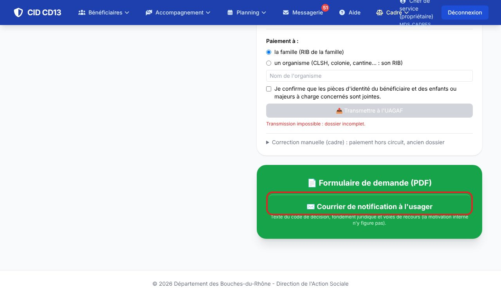
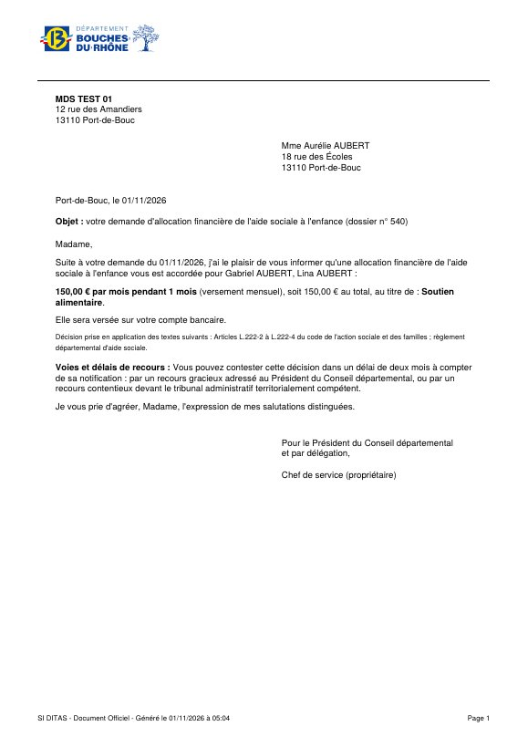
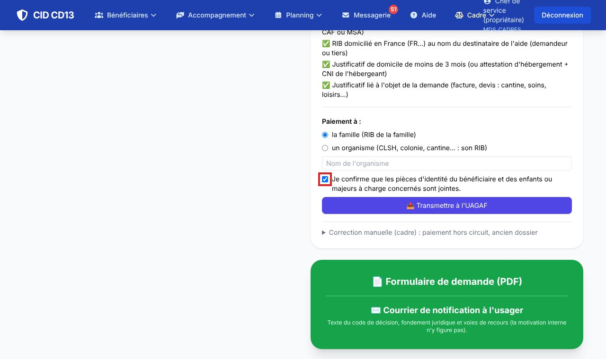
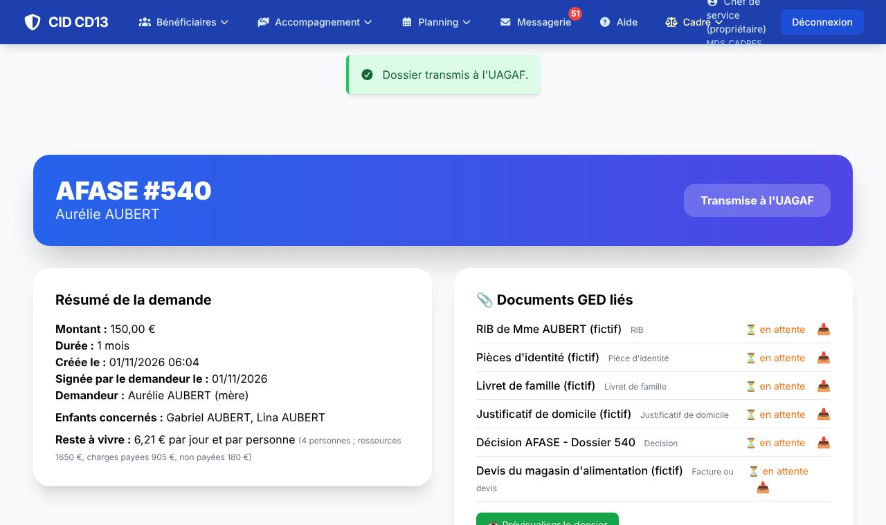

1Éditer le courrier de notification


- Sur la fiche de l'AFASE, cliquez sur Courrier de notification à l'usager : un PDF prêt à signer est téléchargé.
- Accord : montant, durée, total et destinataire du versement. Refus : le texte du code de refus, avec la précision saisie.
- Le courrier comporte le fondement juridique, les voies et délais de recours et la signature « par délégation ».
Les textes des refus, le fondement juridique et les voies de recours se règlent dans l'administration (référentiel AFASE).
2Compléter le dossier et transmettre


- Dans « Circuit du paiement », la liste des pièces exigées doit être entièrement cochée : le lien ajouter ouvre le dépôt de la pièce manquante.
- Choisissez à qui l'aide est versée : la famille (son RIB) ou un organisme (cantine, centre de loisirs… : son nom et son RIB).
- Cochez la confirmation des pièces d'identité, puis cliquez sur Transmettre à l'UAGAF.
- Le dossier passe au statut Transmise à l'UAGAF.
Tant qu'une pièce manque, le bouton reste grisé avec la mention « Transmission impossible : dossier incomplet ».
Bon à savoir
- Si l'UAGAF renvoie le dossier (pièce illisible, RIB…), il revient à la MDS avec le motif du renvoi : corrigez puis transmettez à nouveau.
- « Correction manuelle (cadre) » sert uniquement aux anciens dossiers payés hors du circuit.
Et ensuite ?
Cliquez sur une image pour l'agrandir. Le cadre rouge montre où cliquer ou quoi remplir. Toutes les données affichées sont fictives.